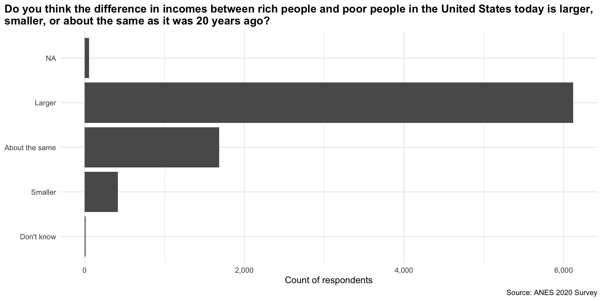
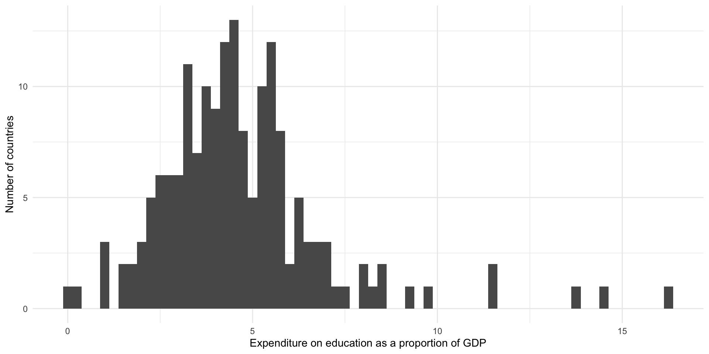
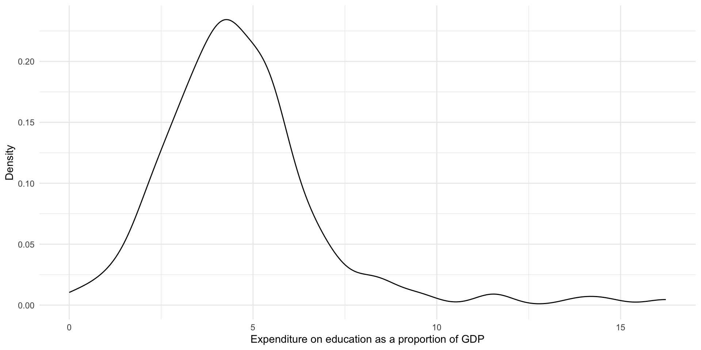
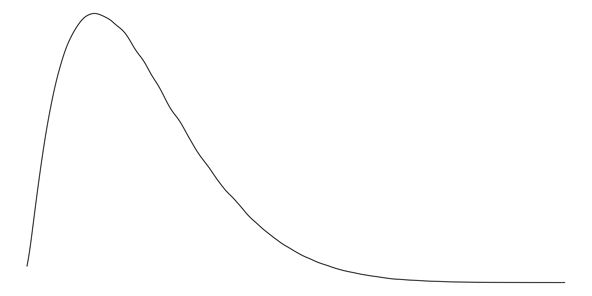
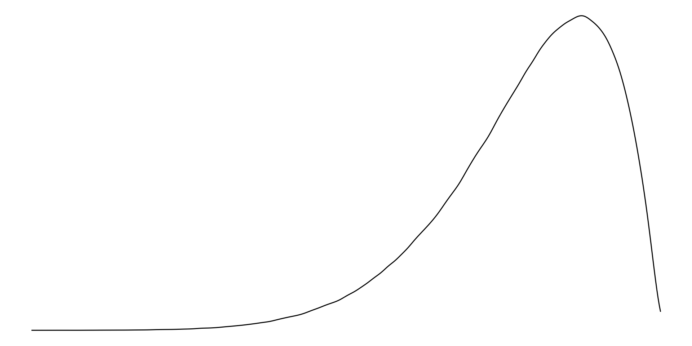
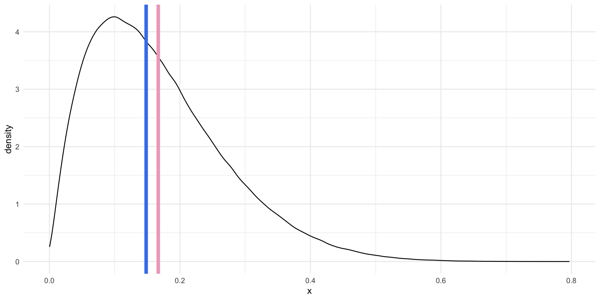
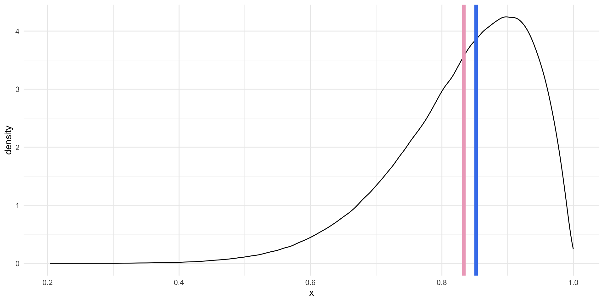
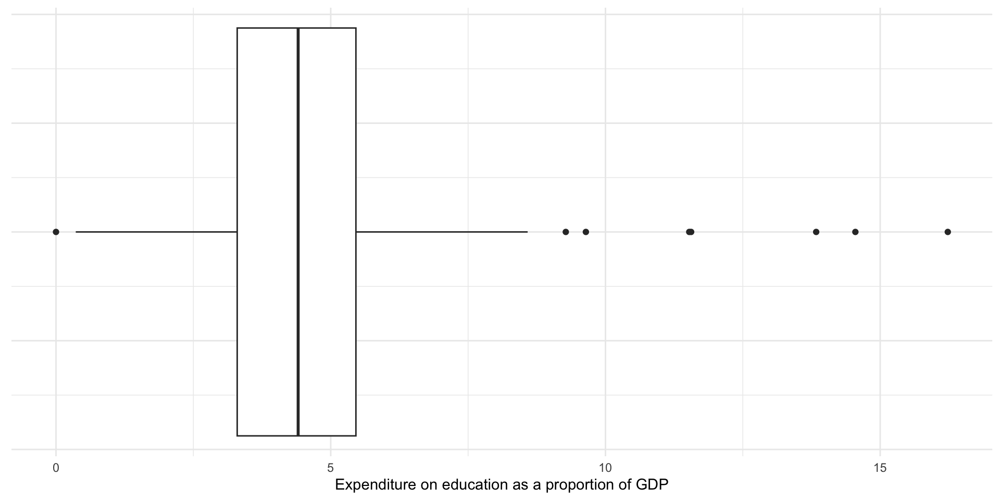
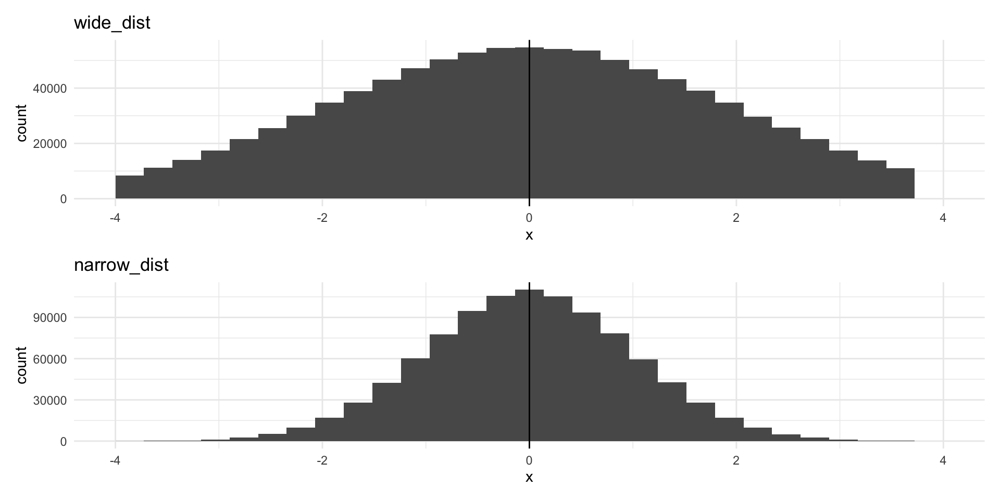

install.packages("devtools")
devtools::install_github("hgoers/polisciols")Descriptive Statistics
Set up
Throughout this course, you will need a series of data sets I have collected, cleaned, and stored in the polisciols R package. These data sets were collected and published by political scientists (including some incredible GVPT alumni).
This package is not published on CRAN1, so you will need to install it using the following code:
Remember, you only need to do this once on your computer. Run this in the console.
You will also need access to the following R packages to complete this week’s activities:
Installing packages
If you have not already done so, please install or update these packages by running the following in your console:
install.packages(c("tidyverse",
"wbstats",
"janitor",
"skimr",
"countrycode",
"scales"))How will what you learn this week help your research?
You have an interesting question that you want to explore. You have some data that relate to that question. Included in these data are information on your outcome of interest and information on the things that you think determine or shape that outcome. You think that one (or more) of the drivers is particularly important, but no one has yet written about it or proven its importance. Brilliant! What do you do now?
The first step in any empirical analysis is getting to know your data. I mean, really getting to know your data. You want to dig into it with a critical eye. You want to understand any patterns lurking beneath the surface.
Ultimately, you want to get a really good understanding of the data generation process. This process can be thought of in two different and important ways. First, you want to understand how, out there in the real world, your outcome and drivers come to be. For example, if you are interested in voting patterns, you want to know the nitty gritty process of how people actually vote. Do they have to travel long distances, stand in long queues, fill out a lot of paperwork? Are there age restrictions on their ability to vote? Are there more insidious restrictions that might suppress voting for one particular group in the electorate?
You can use the skills we will discuss in this section to help you answer these questions. For example, you can determine whether there are relatively few young voters compared to older voters. If so, why? In turn, your growing expertise in and understanding of the data generation process should inform your exploration of the data. You might note that people have to wait in long queues on a Tuesday to vote. Does this impact the number of workers vs. retirees who vote?
Now, this is made slightly more tricky by the second part of this process. You need to understand how your variables are actually measured. How do we know who turns out to vote? Did you get access to the voter file, which records each individual who voted and some interesting and potentially relevant demographic information about them? Or are you relying on exit polls, that only include a portion of those who voted? Were the people included in the polls reflective of the total voting population? What or whom is missing from this survey? Of course, if your sample is not representative, you might find some patterns that appear to be very important to your outcome of interest but are, in fact, just an artifact of a poorly drawn sample. If your survey failed to get responses from young people, you may be led to falsely believe that young people don’t vote.
This week you will be introduced to the first part of the data analysis process: data exploration. We use descriptive statistics to describe patterns in our data. These are incredibly powerful tools that will arm you with an intimate knowledge of the shape of your variables of interest. With this knowledge, you will be able to start to answer your important question and potentially identify new ones. You will also be able to sense-check your more complex models and pick up on odd or incorrect relationships that they may find.
As you make your frequency tables and histograms and very elaborate dot plots and box charts, keep in mind that these tools are useful for your interrogation of the data generation process. Be critical. Continue to ask whether your data allow you to detect true relationships between your variables of interest. Build your intuition for what is really going on and what factors are really driving your outcome of interest.
Let’s get started.
Describing your data
Broadly, there are two types of variables: categorical and continuous variables.
Categorical variables are discrete. They can be unordered (nominal) - for example, the different colours of cars - or ordered (ordinal) - for example, whether you strongly dislike, dislike, are neutral about, like, or strongly like Taylor Swift.
Note
Dichotomous (or binary) variables are a special type of categorical variable. They take on one of two values. For example: yes or no; at war or not at war; is a Swifty, or is not a Swifty.
Continuous variables are, well, continuous. For example, your height or weight, a country’s GDP or population, or the number of fatalities in a battle.
Note
Continuous variables can be made into (usually ordered) categorical variables. This process is called binning. For example, you can take individuals’ ages and reduce them to 0 - 18 years old, 18 - 45 years old, 45 - 65 years old, and 65+ years old.
You lose information in this process: you cannot go from 45 - 65 years old back to the individuals’ precise age. In other words, you cannot go from a categorical to continuous variable.
Let’s take a look at how you can describe these different types of variables using real-world political science examples.
Describing categorical variables
Generally, we can get a good sense of a categorical variable by looking at counts or proportions. For example, which category contains the most number of observations? Which contains the least?
Note
Later, we will ask interesting questions using these summaries. These include whether differences between the counts and/or percentages of cases that fall into each category are meaningfully (and/or statistically significantly) different from one another. This deceptively simple question serves as the foundation for a lot of political science research.
Let’s use the American National Election Survey to explore how to produce useful descriptive statistics for categorical variables using R. The ANES surveys individual US voters prior to and just following US Presidential Elections. It surveys them about their political beliefs and behavior.
We can access the latest survey (from the 2020 Presidential Election) using the polisciols package:
polisciols::nes
Exercise
Take a look at the different pieces of information collected about each respondent by running ?nes in your console.
Let’s look at US voters’ views on income inequality in the US. Specifically, we will look at whether individuals think the difference in incomes between rich people and poor people in the United States today is larger, smaller, or about the same as it was 20 years ago.
Respondents could provide one of four answers (or refuse to answer the question):
distinct(nes, income_gap)# A tibble: 5 × 1
income_gap
<ord>
1 About the same
2 Larger
3 Smaller
4 <NA>
5 Don't know This is an ordinal categorical variable. It is discrete and ordered. We can take a look at the variable itself using the helpful skimr::skim() function:
skim(nes$income_gap)| Name | nes$income_gap |
| Number of rows | 8280 |
| Number of columns | 1 |
| _______________________ | |
| Column type frequency: | |
| factor | 1 |
| ________________________ | |
| Group variables | None |
Variable type: factor
| skim_variable | n_missing | complete_rate | ordered | n_unique | top_counts |
|---|---|---|---|---|---|
| data | 54 | 0.99 | TRUE | 4 | Lar: 6117, Abo: 1683, Sma: 416, Don: 10 |
From this, we learn that:
- The variable type is a factor (see the R tip below)
- We are missing 54 observations (in other words, 54 people did not answer the question)
- This means that we have information on 99% of our observations (from
complete_rate).
Tip
Remember, there are many different types of data that R recognizes. These include characters ("A", "B", "C"), integers (1, 2, 3), and logical values (TRUE or FALSE). R treats categorical variables as factors.
Frequency distribution
We can take advantage of janitor::tabyl() to quickly calculate the number and proportion of respondents in each age bracket.
tabyl(nes, income_gap) income_gap n percent valid_percent
Don't know 10 0.001207729 0.001215658
Smaller 416 0.050241546 0.050571359
About the same 1683 0.203260870 0.204595186
Larger 6117 0.738768116 0.743617797
<NA> 54 0.006521739 NA
Tip
valid_percent provides the proportion of respondents who provided each answer with missing values removed from the denominator. For example, the ANES surveyed 8,280 respondents in 2020, but only 8,226 of them answered this question.
6,117 responded that they believe the income gap is larger today than it was 20 years ago. Therefore, the Larger proportion (which is bounded by 0 and 1, whereas percentages are bounded by 0 and 100) is 6,117 / 8,280 and its valid proportion is 6117 / 8,226.
Visualizing this frequency
It is a bit difficult to quickly determine relative counts. Which was the most popular answer? Which was the least? Are these counts very different from each other?
Visualizing your data will give you a much better sense of it. I recommend using a bar chart to show clearly relative counts.
ggplot(nes, aes(y = income_gap)) +
geom_bar() +
theme_minimal() +
theme(plot.title = element_text(face = "bold"),
plot.title.position = "plot") +
labs(
title = "Do you think the difference in incomes between rich people and poor people in the United States today is larger, \nsmaller, or about the same as it was 20 years ago?",
x = "Count of respondents",
y = NULL,
caption = "Source: ANES 2020 Survey"
) +
scale_x_continuous(labels = scales::label_comma())
Tip
geom_bar() automatically counts the number of observations in each category.
From this plot we quickly learn that a large majority of respondents believe that the income gap has grown over the last 20 years. Very few people believe it has shrunk.
Describing continuous variables
We need to treat continuous variables differently from categorical ones. Continuous variables cannot meaningfully be bound together and compared. For example, imagine making a frequency table or bar chart that counts the number of countries with each observed GDP. You would have 193 different counts of one. Not very helpful!
We can get a much better sense of our continuous variables by looking at how they are distributed across the range of all possible values they could take on. Phew! Let’s make sense of this using some real-world data.
For this section, we will look at how much each country spends on education as a proportion of its gross domestic product (GDP). We will use wbstats::wb_data() to collect these data.
perc_edu <- wb_data(
"SE.XPD.TOTL.GD.ZS", start_date = 2020, end_date = 2020, return_wide = F
) |>
transmute(
country,
region = countrycode(country, "country.name", "region"),
year = date,
value
)
perc_edu# A tibble: 217 × 4
country region year value
<chr> <chr> <dbl> <dbl>
1 Afghanistan South Asia 2020 NA
2 Albania Europe & Central Asia 2020 3.34
3 Algeria Middle East & North Africa 2020 7.04
4 American Samoa East Asia & Pacific 2020 NA
5 Andorra Europe & Central Asia 2020 2.86
6 Angola Sub-Saharan Africa 2020 2.74
7 Antigua and Barbuda Latin America & Caribbean 2020 2.99
8 Argentina Latin America & Caribbean 2020 5.28
9 Armenia Europe & Central Asia 2020 2.71
10 Aruba Latin America & Caribbean 2020 NA
# ℹ 207 more rows
Note
I have added each country’s region (using countrycode::countrycode()) so that we can explore regional trends in our data.
We can get a good sense of how expenditure varied by country by looking at the center, spread, and shape of the distribution.
Visualizing continuous distributions
First, let’s plot each country’s spending to see how they relate to one another. There are two plot types commonly used for this: histograms and density curves.
Histograms
A histogram creates buckets along the range of values our variable can take (i.e. buckets of 10 between 1 and 100 would include 1 - 10, 11 - 20, 21 - 30). It then counts the number of observations that fall into each of those buckets and plots that count.
Let’s plot our data as a histogram with a bin width of 1 percentage point:
ggplot(perc_edu, aes(x = value)) +
geom_histogram(binwidth = 1) +
theme_minimal() +
labs(
x = "Expenditure on education as a proportion of GDP",
y = "Number of countries"
)
From this we learn that most countries spend between three to five percent of their GDP on education. There appears to be an outlier: a country that spends around 10 percent of its GDP on education.
If we pick a narrower bin width, we will see more fine-grained detail about the distribution of our data:
ggplot(perc_edu, aes(x = value)) +
geom_histogram(binwidth = 0.25) +
theme_minimal() +
labs(
x = "Expenditure on education as a proportion of GDP",
y = "Number of countries"
)
From this we learn that there most countries spend around four percent of their GDP on education. There is a small cluster of countries that spend between around 7.5 to nine percent on these services.
Density curves
Density curves also communicate the distribution of continuous variables. They plot the density of the data that fall at a given value on the x-axis.
Let’s plot our data using a density plot:
ggplot(perc_edu, aes(x = value)) +
geom_density() +
theme_minimal() +
labs(
x = "Expenditure on education as a proportion of GDP",
y = "Density"
)
This provides us with the same information above, but highlights the broader shape of our distribution. We again learn that most countries spend around four percent of their GDP on education. There are some that spend above 7.5 percent.
Understanding distributions
We can use the shape of a variable’s distribution to compare our variables of interest to other variables. Is the distribution symmetric or skewed? Where are the majority of observations clustered? Are there multiple distinct clusters, or high points, in the distribution?
There are three broad distributions that you should know: normal, right-skewed, and left-skewed. People use these terms to summarize the shape of their continuous data.
Normal distribution
A normally distributed variable includes values that fall symmetrically away from their center point, which is the peak (or most common value).
Examples of normally distributed data include the height or weight of all individuals in a large population.
Note
This distribution is also referred to as a bell-curve.

Right-skewed distribution
With right-skewed data, the majority of data have small values with a small number of larger values.
Examples of right-skewed data include countries’ GDP.

Left-skewed distribution
With left-skewed data, the majority of data have large values with a small number of small values.
Examples of left-skewed data include democracies’ election turn-out rates.

Measures of central tendency: mean, median, and mode
We can also use measures of central tendency to quickly describe and compare our variables.
Mean
The mean is the average of all values. Formally:
\[ \bar{x} = \frac{\Sigma x_i}{n} \]
In other words, add all of your values together and then divide that total by the number of values you have.
In R:
mean(perc_edu$value, na.rm = T)[1] 4.571329
Tip
If you do not use the argument na.rm (read “NA remove!”), you will get an NA if any exist in your vector of values. This is a good default! You should be very aware of missing data points.
On average, countries spent 4.57% of their GDP on education in 2020.
Median
The median is the mid-point of all values.
To calculate it, put all of your values in order from smallest to largest. Identify the value in the middle. That’s your median.
In R:
median(perc_edu$value, na.rm = T)[1] 4.50287The median country spent 4.50% of their GDP on education in 2020.
Mode
The mode is the most frequent of all values.
To calculate it, count how many times each value occurs in your data set. The one that occurs the most is your mode.
Note
This is usually a more useful summary statistic for categorical variables than continuous ones. For example, which colour of car is most popular? Which political party has the most members?
In R:
Using central tendency to describe and understand distributions
Normally distributed values have the same mean and median.

For right skewed data, the mean is greater than the median.

For left skewed data, the mean is smaller than the median.

Note
When do we care about the mean or the median? There is no simple answer to this question. Both of these values are useful summaries of our continuous data. By default, we use the average to describe our data in statistical analysis. As you will learn, most regression models are, fundamentally, just fancy averages of our data. However, this default is not always sensible.
As you may have noted above, the average value is more sensitive to extreme values. If you have one very large or very small number in your vector of numbers, your average will be pulled well away from your mid-point (or median). This can lead you astray. To illustrate, let’s look at the average and median of the numbers between one and 10:
x <- 1:10
x [1] 1 2 3 4 5 6 7 8 9 10If we add one very large number to our vector, our average will shoot up but our median will only move up one additional number in our collection:
x <- c(x, 1000)
x [1] 1 2 3 4 5 6 7 8 9 10 1000Which number better summarizes our data? Here, I would suggest that the average is misleading. That one 1,000 data point is doing a lot of the work. The median better describes the majority of my data.
We will talk more about this (and outliers more specifically) throughout the semester.
Five number summary
As you can see, we are attempting to summarize our continuous data to give us a meaningful but manageable sense of it. Means and medians are useful for continuous data.
We can provide more context to our understanding using more summary statistics. A common approach is the five number summary. This includes:
The smallest value;
The 25th percentile value, or the median of the lower half of the data;
The median;
The 75th percentile value, or the median of the upper half of the data;
The largest value.
We can use skimr::skim() to quickly get useful information about our continuous variable.
skim(perc_edu$value)| Name | perc_edu$value |
| Number of rows | 217 |
| Number of columns | 1 |
| _______________________ | |
| Column type frequency: | |
| numeric | 1 |
| ________________________ | |
| Group variables | None |
Variable type: numeric
| skim_variable | n_missing | complete_rate | mean | sd | p0 | p25 | p50 | p75 | p100 | hist |
|---|---|---|---|---|---|---|---|---|---|---|
| data | 58 | 0.73 | 4.57 | 1.66 | 1.37 | 3.34 | 4.5 | 5.54 | 10.54 | ▃▇▅▁▁ |
We have 217 rows (because our unit of observation is a country, we can read this as 217 countries2). We are missing education spending values for 58 of those countries (see n_missing), giving us a complete rate of 73% (see complete_rate).
The country that spent the least on education as a percent of its GDP in 2020 was Haiti, which spent 1.4% (see p0). The country that spent the most was the Micronesia, Fed. Sts., which spent 10.5% (see p100). The average percent of GDP spent on education in 2020 was 4.6% (see mean) and the median was 4.5% (see p50).
This description was a bit unwieldy. As usual, to get a better sense of our data we should visualize it.
Box plots
Box plots (sometimes referred to as box and whisker plots) visualize the five number summary (with bonus features) nicely.
ggplot(perc_edu, aes(x = value)) +
geom_boxplot() +
theme_minimal() +
theme(
axis.text.y = element_blank()
) +
labs(
x = "Expenditure on education as a proportion of GDP",
y = NULL
)
The box in the graph above displays the 25th percentile, the median, and the 75th percentile values. The tails show you all the data up to a range 1.5 times the interquartile range (IQR), or the 75th percentile minus the 25th percentile (or the upper edge of the box minus the lower edge of the box). If the smallest or largest values fall below or above (respectively) 1.5 times the IQR, the tail ends at that value. The remaining data points (if they exist) are displayed as dots shooting away from the whiskers of our box and whisker plot.
Outliers
Note that some countries’ expenditure are displayed as dots. The box plot above is providing you with a bit more information than the five number summary alone. If the data include values that fall outside of the IQR, they are displayed as dots. These are (very rule of thumb, take with a grain of salt, please rely on your theory and data generation process instead!) candidates for outliers.
Outliers fall so far away from the majority of the other values that they should be examined closely and perhaps excluded from your analysis. As discussed above, they can distort your mean. They do not, however, distort your median.
Note
We will talk more about how to deal with outliers later in the course.
Measures of spread: range, variance, and standard deviation
We now have a good sense of some of the features of our data. Another useful thing to know is the shape of the distribution. Here, measures of spread are useful.
Range
The range is the difference between the largest and smallest value.
\[ range = max - min \]
The difference between the country that spends the highest proportion of its GDP on education and that which spends the least is 9.17 percentage points.
Variance
The variance measures how spread out your values are. On average, how far are your observations from the mean?
This measure can, at first, be a bit too abstract to get an immediate handle on. Let’s walk through it. Imagine we have two data sets, wide_dist and narrow_dist. Both are normally distributed, share the same mean (0), and the same number of observations (1,000,000).
wide_dist# A tibble: 1,000,000 × 1
x
<dbl>
1 -0.380
2 -1.04
3 -2.40
4 1.10
5 -0.666
6 -0.0237
7 1.86
8 0.961
9 0.735
10 -1.09
# ℹ 999,990 more rowsnarrow_dist# A tibble: 1,000,000 × 1
x
<dbl>
1 0.421
2 0.250
3 -0.717
4 -0.743
5 0.184
6 0.324
7 -0.0226
8 -1.42
9 -1.01
10 -1.90
# ℹ 999,990 more rowsLet’s plot them:

Despite both having the same center point and number of observations, the data are much more spread out around that center point in the top graph (of wide_dist).
The data in the top graph have higher variance (are more spread out) than those in the bottom graph. We measure this by calculating the average of the squares of the deviations of the observations from their mean.
\[ s^2 = \frac{\Sigma(x_i - \bar{x})^2}{n - 1} \]
Let’s step through this. We will first calculate the variance of wide_dist. To do this:
Calculate the mean of your values.
Calculate the difference between each individual value and that mean (how far from the mean is every value?).
Square those differences.
Tip
We do not care whether the value is higher or lower than the mean. We only care how far from the mean it is. Squaring a value removes its sign (positive or negative). Remember, if you multiply a negative number by a negative number, you get a positive number. This allows us to concentrate on the difference between each individual data point and the mean.
Add all of those squared differences to get a single number.
Divide that single number by the number of observations you have minus 1.
You now have your variance!
In R:
wide_dist_mean <- mean(wide_dist$x)
wide_var_calc <- wide_dist |>
mutate(
mean = wide_dist_mean,
diff = x - mean,
diff_2 = diff^2
)
wide_var_calc# A tibble: 1,000,000 × 4
x mean diff diff_2
<dbl> <dbl> <dbl> <dbl>
1 -0.380 -0.000106 -0.380 0.145
2 -1.04 -0.000106 -1.04 1.07
3 -2.40 -0.000106 -2.40 5.74
4 1.10 -0.000106 1.10 1.22
5 -0.666 -0.000106 -0.666 0.443
6 -0.0237 -0.000106 -0.0236 0.000555
7 1.86 -0.000106 1.86 3.47
8 0.961 -0.000106 0.961 0.923
9 0.735 -0.000106 0.735 0.540
10 -1.09 -0.000106 -1.09 1.19
# ℹ 999,990 more rowsWe the add those squared differences between each observation and the mean of our whole sample together. Finally, we divide that by one less than our number of observations.
We can compare this to the variance for our narrower distribution.
narrow_var_calc <- narrow_dist |>
mutate(
mean = mean(narrow_dist$x),
diff = x - mean,
diff_2 = diff^2
)
narrow_var <- sum(narrow_var_calc$diff_2) / (nrow(narrow_var_calc) - 1)
narrow_var[1] 1.000108It is, in fact, smaller!
That was painful. Happily we can use var() to do this in one step:
var(wide_dist) x
x 4.002308var(narrow_dist) x
x 1.000108On average, countries spent 2.75% more or less than the average of 4.57% of their GDP on education in 2020.
Standard deviation
A simpler measure of spread is the standard deviation. It is simply the square root of the variance.
sqrt(wide_var)[1] 2.000577sqrt(narrow_var)[1] 1.000054You can get this directly using sd():
sd(wide_dist$x)[1] 2.000577sd(narrow_dist$x)[1] 1.000054The standard deviation of all countries’ percentage of their GDP that they spent on education in 2020 was 1.66%. This horrible sentence demonstrates that standard deviations are most usefully employed in contexts other than attempts to better understand your variables of interest. They are very important for determining how certain we can be about the relationships between different variables we uncover using statistical models (which we will get to later in the semester).
Conclusion
Your empirical analysis is only as strong as its foundation. You can use the tools you learnt this week to build a very strong foundation. Always start any analysis by getting a very strong sense of your data. Look at it with a critical eye. Does it match your intuition? Is something off? What can you learn about the peaks and troughs among your observations?
Footnotes
The Comprehensive R Archive Network (CRAN) hosts many R packages that can be installed easily using the familiar
install.packages()function. These packages have gone through a comprehensive quality assurance process. I wrotepolisciolsfor this class and will update it regularly. I, therefore, will not host it through CRAN: the quality assurance process takes too long to be practical for our weekly schedule. Instead, you are downloading it directly from its Github repository.↩︎You are right: there were not
nrow(perc_edu)countries in 2020. The World Bank collects data on some countries that are not members of the UN (and would not, traditionally, be considered to be countries).↩︎